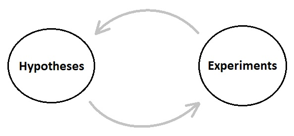
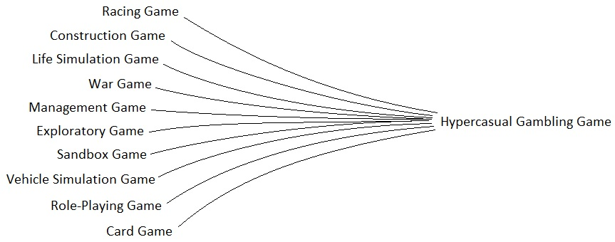
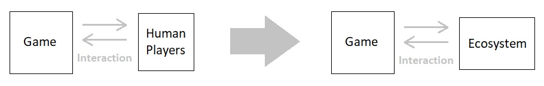
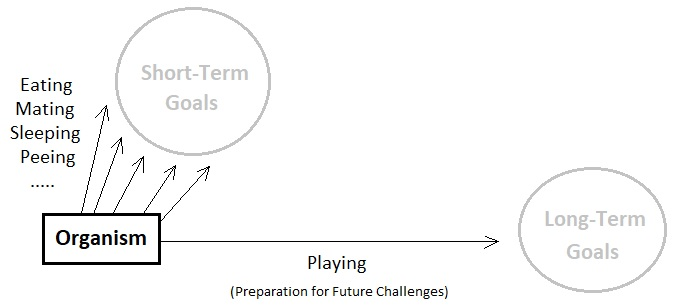
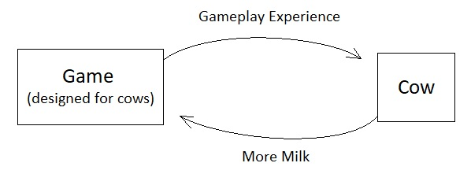
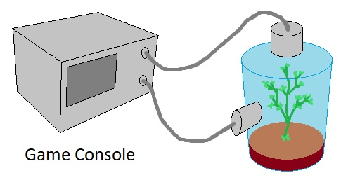
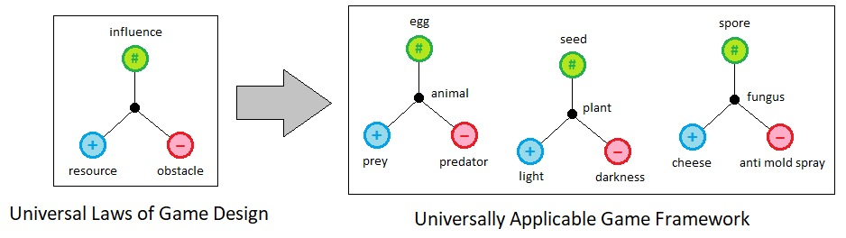
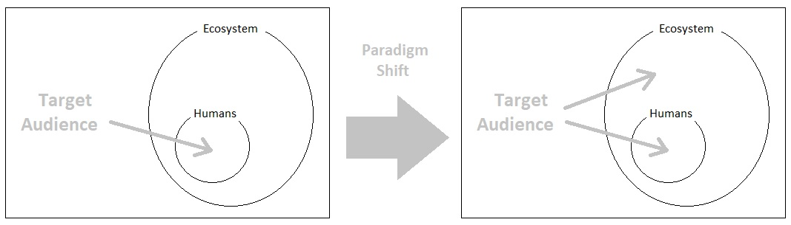
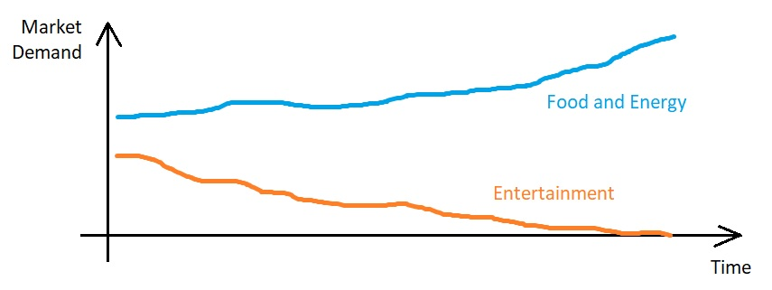
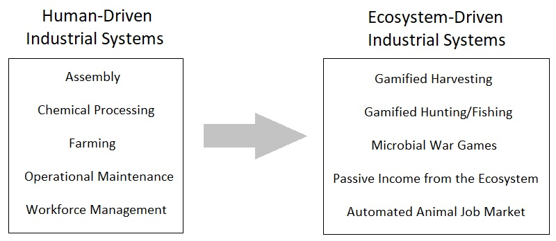

(Continued from Volume 11)
When it comes to the matter of conceptual essence, the study of game design is not so different from other branches of knowledge in the sense that it involves a vast network of scientific inquiries. A game is a chain of back-and-forth causal interactions between a fictional system and its end user (aka "player"), and is therefore hardly less subject to rigorous academic investigations compared to most other areas of study. It is a multidisciplinary body of research which draws its sources of inspiration from psychology, cognitive science, ethics, aesthetics, and other clusters of theoretical ideas which can altogether be referred to as "philosophy".
It raises a sense of perplexity, therefore, to be witnessing a seemingly counterintuitive sort of phenomenon which has been chronically present in our mainstream game development community. Those who are keen to discern the apparent normal distribution of the population's spectrum of social behaviors should have already realized that anyone whose behavioral sample point is confined within approximately 2 standard deviations of that of the average game developer tends to exhibit a surprisingly fragmented sort of mannerism when it comes to their area of expertise, in the sense that one possesses a strangely brute and uniform tendency to claim that the act of collecting and iterating empirical data alone will suffice to yield pathways to long-term innovations in the game industry.
A piece of empirical data is nothing more than a bunch of numerical gibberish unless we have a way of interpreting it. In order to extract meaning out of it, therefore, it is expected of a true scientific investigator to conceive a set of hypotheses and make sense of the collected data based upon them, instead of simply collecting a bunch of random data first and then expecting to find meaning in it. And since hypotheses originate from theories rather than an endless sequence of buzzwords and motivational slogans such as "Just make a game first! Practice makes it perfect!", it should be noted that the expected behavior of a decent individual who is capable of building something that is somehow distinguishable from a mere reiteration of somebody else's work is to acknowledge the value of establishing a fine balance between both empirical and theoretical faculties of mind, as well as that the way to ensure that they both release their utmost potentials is to utilize them together in a synergetic manner.
A prominent reason why the usage of such a scientific methodology is more crucial than ever nowadays is that we are living in an age where simply making a game that is "fun to play" usually does not suffice to let ourselves have a high chance of considerable monetization in the game industry. There are millions of games around the world which are armed with all sorts of creative strategies to entertain human audiences, and the total number of human gamers are fairly limited. What makes it even worse is that videogames do not decay over time (unlike fruits and vegetables which can be expected to be sold over and over due to repeated consumption), and can be played almost everywhere on Earth by any number of people at any time with almost zero physical limitation. At least back in the 90s and early 2000s, people had to buy separate physical copies (e.g. CDs) in order to be able to play the same game in different places; such a barrier is not even a thing nowadays.
All these factors contribute to the over-saturation of the game industry, on top of the sheer difficulty of monetization due to the abundance of free-to-play games, which often leads to the necessity of bloating the whole gameplay session with incessant tides of advertisement and microtransactions, near-empty random reward packs, and other wallet-opening strategies which, when combined in the most economically optimized way, plunge the whole market into a single point of convergence which is hardly anything more than a glorified slot machine.
The ultimate destiny of plutocracy is mediocracy. Even the highest form of artistic and intellectual endeavors are doomed to negligence and ridicule before the face of the so-called "free market", which prioritizes the most addictive and money-sucking work of cliché, that is optimized to appeal to the broadest audience as possible, over the wide spectrum of quirky yet adventurous experiments that were conducted by the game developers of the 80s and 90s back when the videogame industry was not fully mature yet to be able to allow such a point of strategic convergence to be visible. And if you happen to be content with this state of mediocrity in today's gaming culture which financially rewards conformity and punishes individuality, you should probably not be wasting your time reading this article because such a mindset would imply that our value systems hardly align with each other on a fundamental level, and thus render most of our further discussions more or less pointless.
So, what will be a solution to such a state of things? Unless the entire market changes its own inherent characteristics (which is extremely unlikely), the sort of strategic convergence I mentioned above is bound to continue. We simply cannot keep climbing against its natural flow like salmons, while branding ourselves as "hungry artists".
However, we should also note that the reason why such a convergence has been establishing itself so quickly within only a few decades after the initial popularization of videogames is that nearly all commercial games have been exclusively targeting human audiences. From my viewpoint, the underlying assumption that a game must be sold against human customers greatly limits the scope of the gaming market, thereby allowing anyone (or any AI system) who figures out the most optimal strategy of gratifying the average human audience to quickly get promoted into the "ultimate winner" and render further competition mostly meaningless. That is, monopoly is way too easy in the mainstream videogame industry chiefly because it only considers a single type of audience as its source of income - human beings.
If we consider the entire ecosystem of planet Earth as our potential customer base, on the other hand, we will be able to break down the wall of this over-saturated market and start revealing a vast assortment of new opportunities in the business of game development and publication.
And by "ecosystem", what I am referring to is the full spectrum of animals, plants, and even microbial lifeforms which are distributed all over the globe. There is no reason to presuppose that games must be designed only for humans and absolutely no other species, for it is reasonable to say that most behaviors exhibited by the majority of biological species possess their own utilitarian origins (since pointless activities are likely to impose disadvantages upon their courses of survival and reproduction, as far as the context of Darwinian natural selection is concerned), and that the act of play should be deemed as one of such behaviors.
A game is a medium of play, and playing is not necessarily an activity that is exclusive to humans, as is demonstrated by the sheer variety of playful behaviors of cats, dogs, dolphins, and other animal species which do not directly pertain to one's immediate biological benefits in terms of food gathering, security, and other physiological needs. Dogs often wrestle with one another in a mild way, and we usually indicate such a behavioral pattern as a form of play because wrestling itself does not grant them foods, shelters, or any other tangible benefits immediately; rather, such a seemingly wasteful activity may be considered a casual form of "training" or "self-education" - an instinctive method of fulfilling one's belief that frequently being exposed to simulated (fake) challenges will prepare one's mind and body to overcome real dangers by the time they appear. This sort of long-term survival strategy is usually employed by youngsters in the form of games, yet it is also prominent in many parts of our civilization such as military training, workout, rehabilitation, apprenticeship, and many others.
And if we proceed to define the act of play as any activity which can be expected to increase the player's overall chance of survival and reproduction (i.e. degree of competence as a biological being) in future moments in time by means of learning/training which ensue from whichever game it has chosen to play, we can make a fairly educated conjecture that any strategically advanced species in our ecosystem (which may include not only intelligent mammals but also birds, insects, plants, mushrooms, and other branches of living things which express their own cunning methods of survival that are not so instantaneous in their effects) spend significant portions of their time playing their own games.
And if we manage to find out a set of "universal laws" in regard to the nature of play which are being shared across the entire taxonomy of species, we will be able to open up a hidden gateway to the brand new continent of opportunities in game development - for it will let us leverage the whole ecosystem as our target audience.
One may disagree with this notion by saying that it is impossible to monetize one's game if the players are not even human beings, since non-human lifeforms are unable to pay money or benefit businesses by watching their ads. And yes, it will be outrageous to say that a monkey is likely to open up its own bank account, work for a job to earn money, and willingly pay for a videogame that is designed to be played by monkeys. However, such a direct path of monetization is not the only way in which a game can generate revenue.
Let us suppose that there is a videogame designed for cows. If this game manages to make a cow play it (with its tongue and feet) and produce more milk than usual as a result of playing, one will definitely be able to say that the extra quantity of milk produced is the amount of monetary value yielded by the game. There are countless other examples, but I am sure you get the idea. Non-human players will not be able to pay in the form of currencies, but many of them can certainly offer natural resources which are interchangeable with financial assets.
Species that are not animals (e.g. plants and fungi), too, can be managed to play games. They obviously are not capable of playing in the same way as animals do, yet they are nevertheless biological beings which exhibit their own input/output patterns with respect to their surroundings. Thus, it is not so unrealistic for one to fancy that it is definitely feasible to run a game for a vegetable by putting it inside an airtight chamber and letting it interact with the game's internal simulation by exchanging airborne chemicals. Any extra rate of growth displayed by the vegetable will be equated with the amount of profit being generated by the game.
In order to turn this idea of interspecies gaming into a reality, however, we ought not to content ourselves with traditional means of game design which mostly focus on what human players typically experience when they play. Instead, we must break the nature of gameplay down to its most elementary units, from which we can figure out how to construct universally applicable games that are designed to be interactable with a wide variety of species on Earth, not just humans.
This is the reason why I initially began the first volume of this series of articles (volume 1) with the assumption that we should reinvent the methodology of game design based upon the perspective of the most archetypal form of life - that is, a single mathematical point in space whose behavioral spectrum consists of the smallest set of fundamental goals one can ever imagine (i.e. Absorb, Expand, and Secure). The idea is, if we analyze the essence of games based off of the most basic unit of life as their hypothetical player, we will be able to establish a generic design framework which can be applied to the entirety of our ecosystem. This will astronomically expand the horizon of our market niche as game developers.
The "Universal Laws of Game Design" is not about improving in-game economy, enhancing gameplay experiences, or elaborating the game's progression curves (Such technical details have already been thoroughly expounded by numerous academic papers and popular blog posts). It is about fueling a whole new paradigm shift which will revolutionize the entire game industry by completely redefining the meaning of the word "game".
And those who will pioneer this vast new land of opportunities are ones who are willing to listen to opinions which have not been parroted by the mainstream media more than a million times, think forward on a long-term basis, see potentials in the conceptual essence of games rather than an endless chain of buzzwords and cheesy marketing taglines, and not be so quick to dismiss ideas for being "impractical" simply because they do not yield shiny results right off the bat.
The idea presented so far, of course, will require a great deal of additional infrastructure to be built which is separate from that of the existing market. Once built, however, it will create a blue ocean in which there are brand new sources of income originating from not just the demands of entertainment, education, psychotherapy, and training, but also those of our primary industries such as agriculture, fishing, forestry, livestock farming, microbial manufacturing, and many others.
And this prospect can be expected to shine more brightly than ever anytime soon, not only because the idea is relatively new and broadly applicable, but also because our global economy is currently plunging itself into a dark rabbit hole. Ongoing wars and disasters within the world's largest agricultural powerhouses, rise in trade protectionism due to freezing diplomatic relations, as well as the apparent weakening of the status of our reserve currency as the foremost standard of monetary value which leads to the instability of the current US-driven system of global commerce, all contribute to the conviction that life will keep getting harder and harder for years to come.
What this means is that the majority of people will no longer have as much time and money to spend on games as before. Global food shortage is an impending threat to humanity which will manifest itself as soon as the United States abandons her role as the sole protector of free trade, in which case countries that are not fully autonomous in terms of food supply will be in dire situations. And you know what? When there is no food, we simply cannot expect people to have time to spend on playing games; we will have to focus on boosting the efficiency of our primary industries (e.g. agriculture) to the utmost degree by means of various methods of optimization. So if today's game developers want to continue enriching their careers without shifting their area of expertise to something that is drastically different, they better reshape their monetization strategy towards a way in which it directly benefits our primary industries. And the ability to design games which are capable of manipulating the biological output of non-human species is a great starting point of such a journey, as it will imply that such games will have the license to serve as core components of our means of producing foods and other necessities in life.
The importance of industrial autonomy is becoming more and more accentuated nowadays, as is evidenced by the popularity of Blockchain, Hashgraph, DeFi, DApp, Web3, IPFS, and other decentralized means of storing/transferring financial assets. And the heart of such a mode of autonomy lies on the ability to control our material environments (e.g. farms, ocean, forests, mines) through self-sustaining protocols, which deal with subtle psychological interactions of their biological constituents (i.e. organisms) by means of automatic reward/punishment feedback loops. The future of gaming has its own gold mine hidden in this vastly unexplored area, but most developers/publishers do not seem to have realize this yet.
In the next volume, we will see how the universal laws of game design, illustrated so far from volume 1 to volume 10, are going to solidify this vision in an industrially viable way.
(Will be continued in Volume 13)